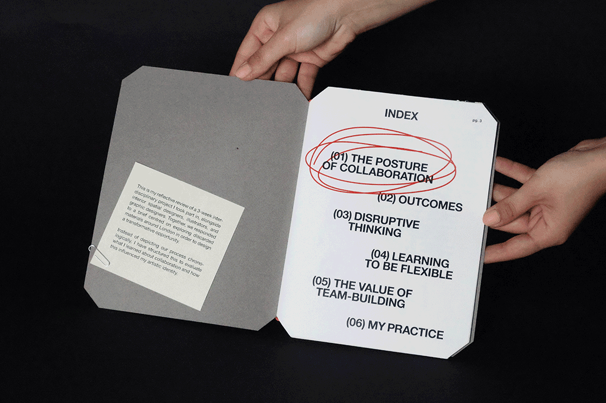
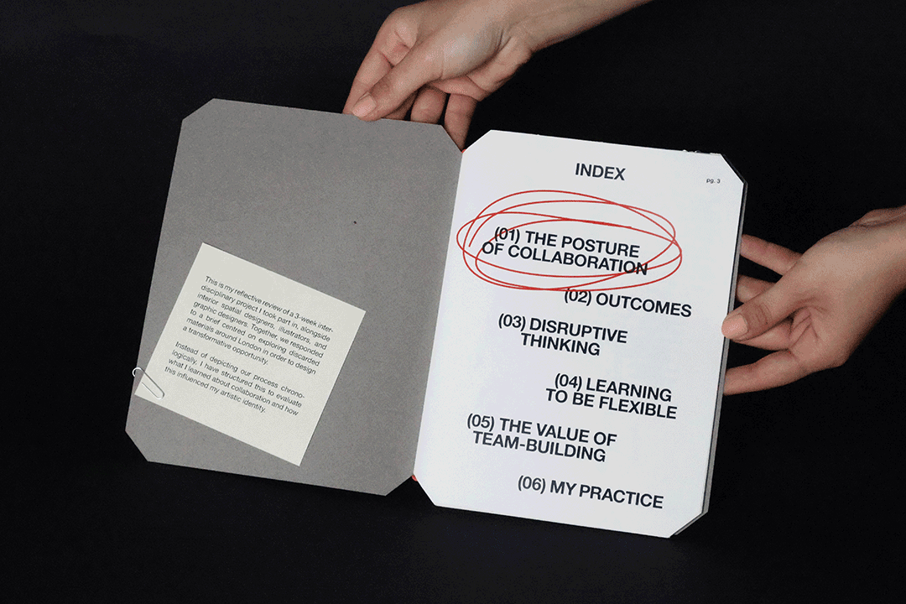

Amalia Popescu
About
Collaboration Files
Dec 24 - Feb 25
This publication is a personal reflection on a three-week interdisciplinary project with interior, illustration, and graphic design students. We created an initiative called LOCKD which you can also view in this portfolio. Rather than presenting the process chronologically, I focused on what the collaboration taught me and how it shaped my artistic identity. The design mimics a collected folder of insights - capturing the nature of my experience.
next project >
 
